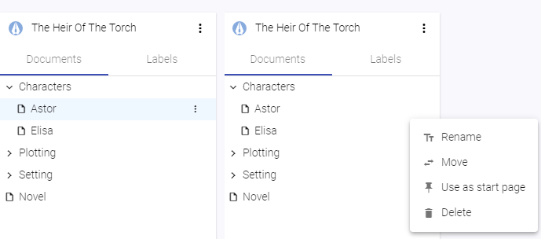
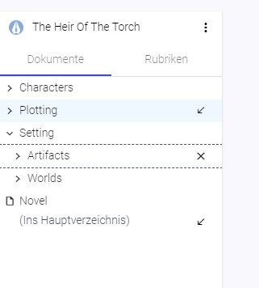
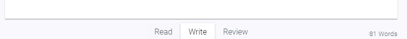
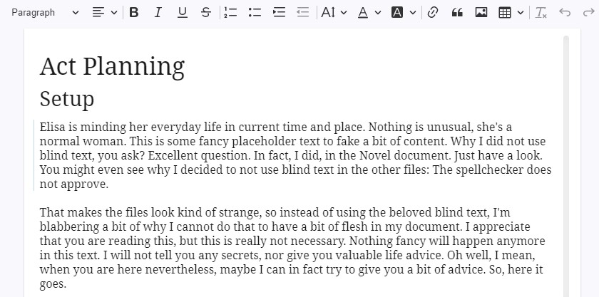
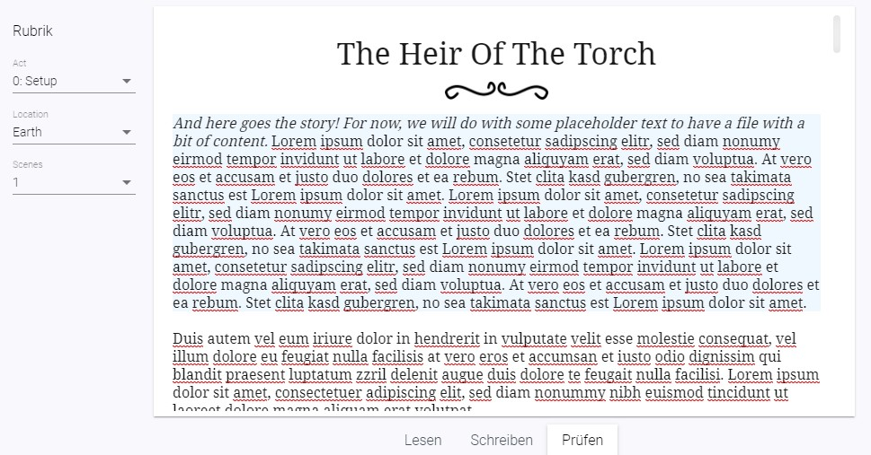

Documents¶
What is a document?¶
A document is the only type of file writerey knows and probably the most important part of it. It is a text file that will be saved as .html to your local disk space, relative to the installation path of writerey. You'll use documents to write your story, your background informations, plan plots and so on.
Create a document¶
You can create documents only inside of a project.
- Navigate into a project, if you have not already
- Click the "More" Menu on the top right corner of the side bar
- Choose "Create Document"
- Choose a Name and hit "Create"

Create a document in an existing folder¶
- Hover over the folder in the sidebar
- Click on the "More" Menu that appears on the tree entry
- Choose "Create Document"
- Choose a Name and hit "Create"
Rename a document¶
- In the explorer, hover over the document you want to rename
- Click on the More Menu on the explorer entry
- Select "Rename"
- A dialog appears. Type in the new name for your document.
- Click "Rename"
Technical note: On every rename, writerey creates a snapshot to reflect this change. Don't wonder: If you rename a folder only in a casesensitive way (i.e. "characters" to "Characters") writerey will create two snapshots to prevent problems that can occur on these cases.

Move a document¶
- In the explorer, hover over the document you want to move
- Click on the More Menu on the explorer entry
- Select "Move"
- You've now entered the move mode. Hover over folders in your explorer to let the "Move here" arrow appear.
- Click on the arrow on the folder you want to move your document
- If you want to move it to the root, click on the Arrow at the very bottom of the tree, right from the "(To Root)" label
To cancel a move, click on the X beside the document you are just moving.

Technical note: On every move, writerey creates a snapshot to reflect this change.
Delete a document¶
- In the explorer, hover over the document you want to delete
- Click on the More Menu on the explorer entry
- Select "Delete"
- Confirm the dialog that pops up
Technical note: On every delete, writerey creates a snapshot before deleting the document to give you a chance to get it back, if necessary.
Use the Editor¶
Writerey uses CKEditor 5. Most of the handling works just like in any other writing application. If you have doubts or question to editor specifica, the official CKEditor website is probably a good place to look.
After creating or navigating into a document, you'll get access to the sheet of paper in the middle. Above you'll have a toolbar that allows to modify how part of your document looks and also give you the possibility to i.e. insert tables and files. Hover over the icons to get a description of what they do.
Switch document modes¶
Right below the editor, you have three modes available. When you click on one of these, your document switches mode. Switching document modes affects the visibility of ui elements as well as the state of the editor.

Read¶
The Read mode gets all the clunky, distracting stuff out of the way and puts your document into a readonly state. This way, you can check (or simply enjoy) your work without distraction.
Tip: To achieve the same for the other document modes, use the distraction free toggle.
Write¶
This is the mode to actively edit your document. You will probably stay in Write Mode most of the time. It lets you edit your document and shows you all the context informations you need in a read mode and hides creation of notes and modification of label values.
Review¶
In the review mode, you'll see all ui elements you need to add or modify context informations like label values and note items. You are still able to edit your document here, too.
Activate a paragraph¶
Activating a paragraph gives you the possibility to maintain label values and paragraph specific notes on it.
- Open up a document
- Either be in write or review mode
- Place the editor cursor in the paragraph you want to activate by clicking in it or moving the cursor via keyboard there
After a short moment, a thin blue border will appear on the left side. This paragraph is now active.
You'll now see its label and note informations and be able to edit both for this specific paragraph in the review mode.
Attention: To be able to activate a paragraph you'll need to switch to Review Mode at least once after his creation. Technical Background: While doing this switch to Review Mode, writerey is calculating and adding some meta informations to your document that the app needs to be able to save paragraph specific informations.

Save a document¶
Writerey saves automatically for you, every time you do a tiny writing pause. You see that your document got saved when the Save Icon in the lower right corner wiggles and the saved date updates. It also saves when you leave the document.
There is no manual action that you need to do.
Access documents outside of writerey¶
Do you wonder where your precious ideas go? Don't worry: Right on your disk space, always accessable for you, even without the app. All documents are saved as .html files under <installation path of writerey>/_writerey_data/<project-name>/ to make sure you can always access your work, no matter the circumstances.
If you want you can open these documents via a Web Browser and edit them in any text editing tool. Please be aware that you'll then edit the source code of the html document and not the rendered version, like you would in writerey, so things could look a bit ugly.
Please pay attention to not break the html structure of an file. writerey will not be able to open up such documents.
Add label values to paragraphs¶
You'll need a existing label with label values in order to assign them. Please be aware that labels are only valid in project scope, that means every project has its own labels.
- Open up your document
- Switch to review mode
- Activate a paragraph
On the left side, you'll now have your created labels displayed. Choose the values you want to assign to this paragraph. When you now switch back to Write mode and your cursor is inside this paragraph, your labels will show up and - if available - you'll see your label info on the right side.

Add label values to documents¶
Currently, you can only add label values to specific paragraphs. Improvements are planned in the future, please refer to the Roadmap.